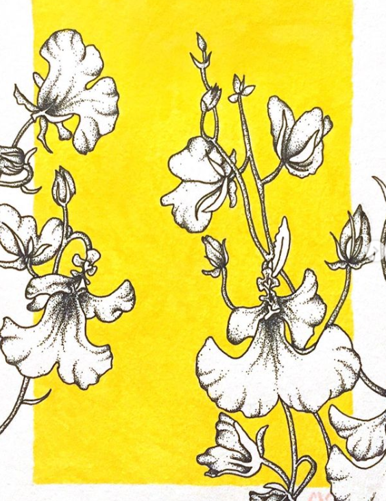
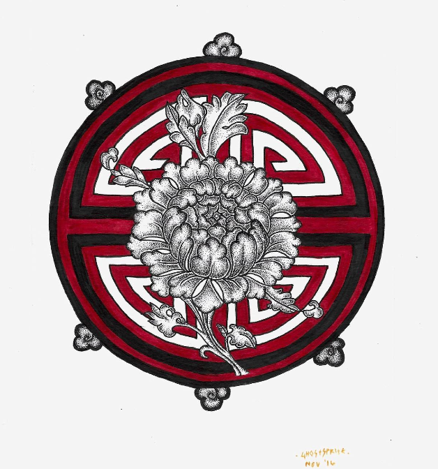
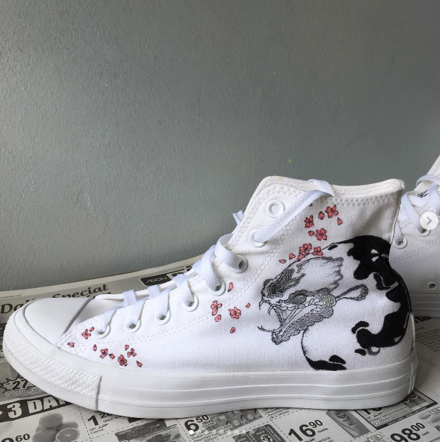
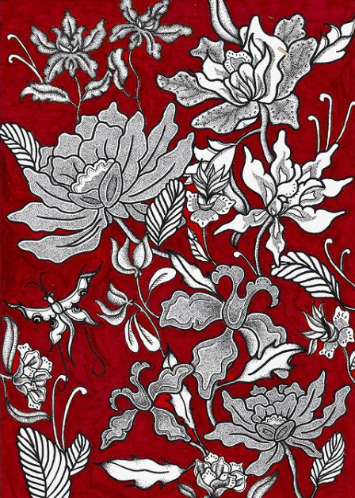

Daffodils:


Being a full-time student can be challenging sometimes. So, having a hobby that I am fairly decent at became a form
of escape from stress and anxiety. Scroll down to see some of my favourite pieces from a few years ago. More works are
posted up on my Instagram page. It would be nice if you could support and hit follow too!
Click here to see each drawing: Daffodils, Lotus, Snake, Batik.
Daffodils:
Stippled daffodils with a bright yellow background, matching the true colour of daffodils. Click the image to see the full post on Instagram!
Lotus:
Stippled lotus with an oriental background. Click the image to see the full post on Instagram!
Snake:
Custom design for a client--stippled snake with painted pink sakura blossoms. Click the image to see the full post on Instagram!
Batik:
Classic, traditional batik stippled on deep red background. Click the image to see the full post on Instagram!
